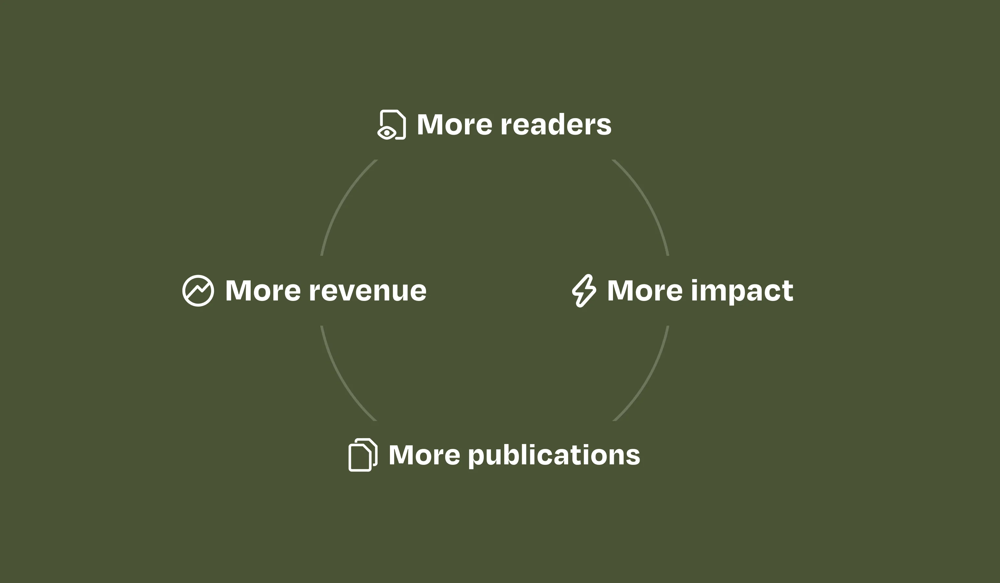
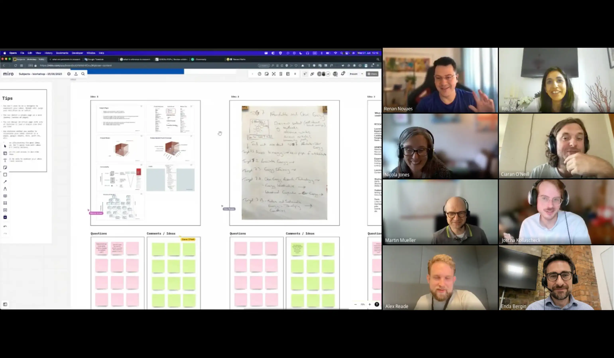
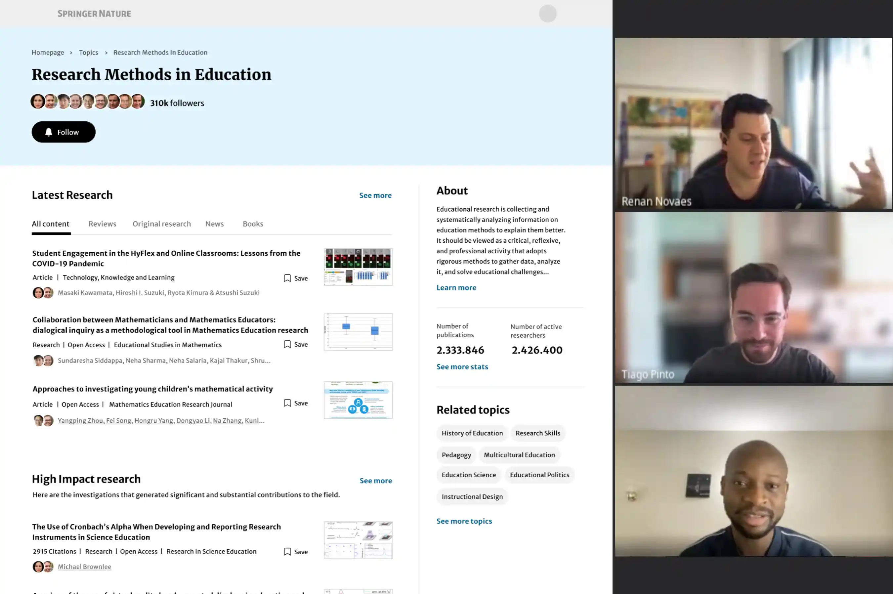
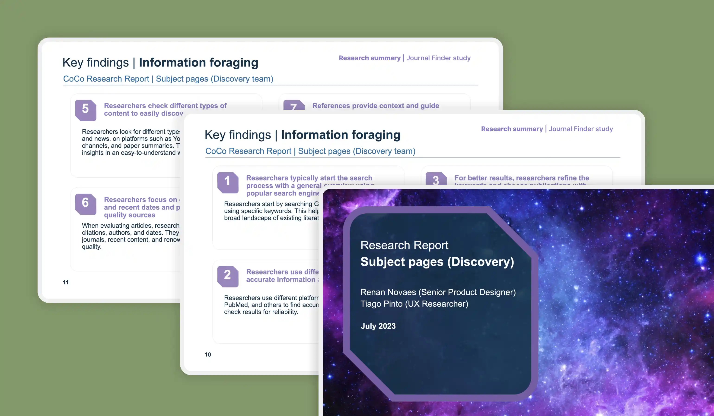

Executive summary
The company
Springer Nature is one of the world's largest publishers of scientific articles and books, publishing around 500k articles and 13k books annually. With 3k+ journals, the company leverages platforms that help researchers uncover new ideas and share discoveries with the world.
My role
As the Senior Product Designer, I led the product's design strategy from discovery to delivery. I partnered with a cross-functional team to build a journal discovery platform, reducing turnaround times and improving acceptance rates.
The problem
A fragmented ecosystem made it difficult for researchers to find the right journal for their work. This lack of a centralized way to browse the company's portfolio of journals led to scope mismatches, submission delays, and users churning to competitors.
Impact
- ↑ 50.7% increase in submission funnel completion rate
- ↑ 35.7% new user acquisition rate via organic search
- ↑ 8.6% session-to-submission conversion rate
The context
Springer Nature is one of the world's most influential scientific publishers, releasing over 14,000 books and 500,000 articles yearly. By leveraging a portfolio of prestige brands - including Nature, Springer and Macmillan - its platform enable the global research community to access and understand the world's most impactful discoveries.
Springer Nature's business model relies on readership. More content consumption leads to better engagement metrics, which sustains the Open Access ecosystem where researchers pay to publish and make their work freely available to the world.

The opportunity
In 2023, I led design strategy and execution for a team focused on the acquisition of new researchers to the Springer Nature platform. Our objective was to convert organic search traffic into active readers, driving click-throughs to underlying scientific articles and encouraging deep reading.
That same year, Springer Nature released a new internal taxonomy to classify content across the platform. While initially built as an information architecture foundation, we quickly recognized its potential as a powerful acquisition engine. By mapping this taxonomy to how researchers actually search for topics, we identified an opportunity to target over 5,000 keyword combinations with topic-specific landing pages.
I partnered with an SEO Specialist and a Product Manager to turn this technical SEO strategy into a scalable product experience. While the business opportunity was clear, the design challenge remained. We needed to solve for three key pillars:
- Engagement: Establishing topical authority to transform landing pages into high-value destinations that convert casual researchers into active readers.
- Scalability: Designing a dynamic, single-page architecture capable of adapting to 5,000 distinct long-tail subjects without manual curation.
Read more...
- Information Architecture: Surfacing the full depth of Springer Nature's portfolio, allowing researchers to easily discover content while enabling search engines to efficiently index and rank the ecosystem of landing and content pages.
My approach
I led design strategy and execution from discovery to delivery. My objective was to shift this initiative from a technical SEO framework into a high-utility product experience that delivered tangible value to the scientific community.
To translate our three strategic pillars into a scalable reality, I drove the following phases:
- Cross-Functional Discovery: Facilitated alignment workshops with SEO, marketing, and editorial publishing. Synthesized their complementary insights to define the exact value the project needed to provide for the business and the researchers.
- Validation & Architecture: Designed the ground-up information architecture and validated hypotheses through mid-fidelity prototype testing with 8 researchers, ensuring the taxonomy mapped to their mental models.
Read more...
- Execution & Quality: Partnered with engineering throughout implementation to ship a high-quality product while ensuring the solution met WCAG AA accessibility standards.
The workshops
At the beginning of the project, stakeholders expressed competing expectations. In order to create alignment and buy-in, I organized cross-disciplinary workshops with senior decision-makers from publishing, product, and marketing to establish a unified user value proposition.
In the first workshop, we focused on understanding what researchers aim to accomplish when they land on one of these pages from a Google search result. We then mapped the researchers' "Jobs to be Done" against our acquisition KPIs, voting on the highest-impact intersections. Finally, we asked stakeholders to sketch ideas to be shared in a follow-up session.
The workshops surfaced three critical insights:
- Expertise is contextual: A researcher might be a deep specialist in one subject and therefore look for highly technical content. On the other hand, they may browse a topic outside their expertise, primarily looking for introductory material.
- Context changes a researcher's needs: Depending on their current task, the exact same researcher might be a newcomer learning the basics of a subject, an active investigator looking for insights for current research, or a professional staying up to date in their field.
Read more...
- Different types of content serve different needs: Books and reviews, for example, are generally introductory content focused on non-specialists. Articles and protocols, on the other hand, typically cater to the needs of specialists.

The user research
To translate our workshop hypotheses into validated design decisions, I worked alongside a UX Researcher to design and facilitate a research study with 8 researchers across different professional roles and subject-matter experience levels.
Each session included contextual interviews — aimed at uncovering information-seeking behaviors, pain points, and tools — followed by a concept validation phase, where participants navigated scenario-based tasks to test the effectiveness of a mid-fidelity prototype.
The research led to three insights that directly shaped the final product:
- Participants perceived the pages as valuable, time-saving resource aggregators, validating our hypothesis that the product can serve as an effective starting hub for content discovery.
- Subject-matter experts leveraged the pages primarily to stay current in their field. Their strong interest in email alerts for new publications proved the project's viability as a retention lever to drive returning traffic.
Read more...
- Non-specialists gravitated toward curated, foundational content such as books, literature reviews, and high-impact research, confirming the need for guidance along a structured learning path.


The solution
The final product is a dynamic content hub adapting to over 5,000 research subjects. It serves both deep specialists and newcomers through a single, scalable architecture that programmatically surfaces relevant content without compromising the user experience.
Rather than building a generic SEO landing page, I designed an experience rooted in four research-backed principles:
- Expertise-driven content hierarchy: The UI structures content along a spectrum to address varying researcher's needs: freshly published articles and email alerts for specialists sit alongside foundational books and reviews for non-specialists.
- Retention loops: Because subject-matter experts primarily want to stay current in their fields, the hub features a "Trending research" section and email alerts for new publications, turning one-time organic visitors into returning readers.
Read more...
- Curated learning paths: To support non-specialists seeking foundational material, the page offers dedicated sections for books, literature reviews, and high-impact articles. Editorially hand-picked content guides this learning journey, driving deeper engagement and more reads per session.
- Strategic internal linking: Each page links to related subjects, creating a navigable taxonomy that helps search engines efficiently index the ecosystem. Additionally, the "Trending research" section acts as an indexing accelerator for freshly published articles.


Impact
The solution proved highly effective in helping researchers confidently choose the right journal for their work, with engagement and conversion metrics validating the product's impact at launch.
Beyond the core discovery experience, early data also signalled strong organic acquisition potential — with over 1 million sessions per month and 35.7% of organic visitors being first-time users.
- The share of website sessions that led to a researcher initiating a manuscript submission — the platform's primary conversion event, equivalent to a purchase in e-commerce.
- The increase in the share of users who started and successfully completed the end-to-end submission flow — from opening the submission system to clicking "Submit manuscript."
- The share of organic search visitors who had never previously accessed the platform, indicating the website's effectiveness as a new user acquisition channel.